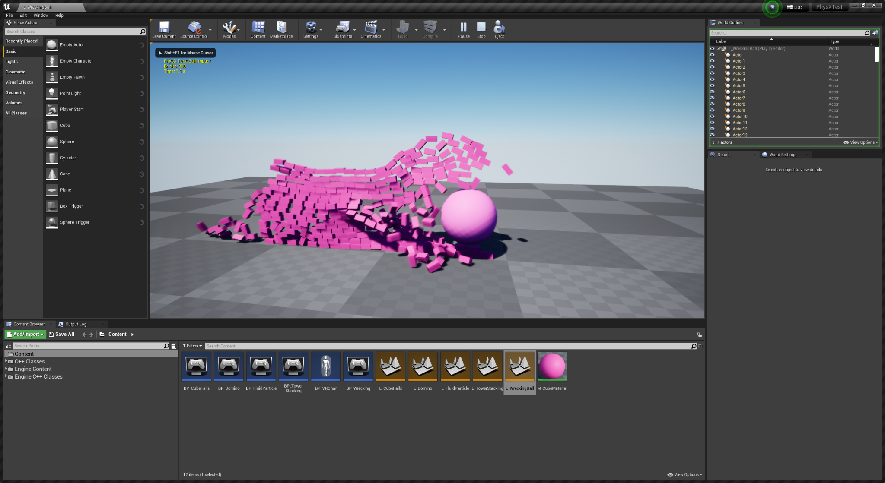
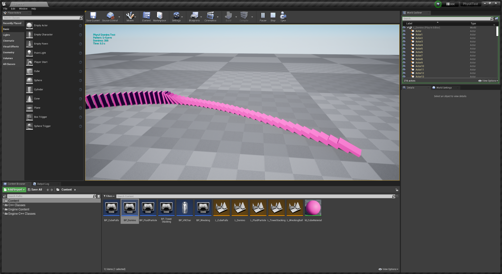
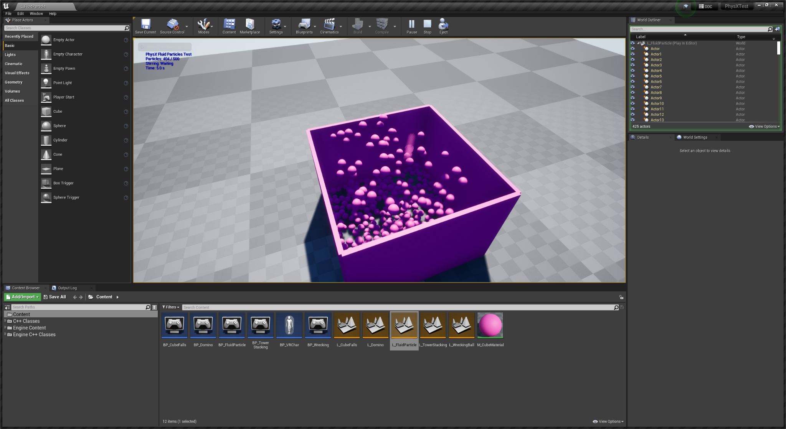

PhysX 测试
通用 PhysX 行为和稳定性测试项目。对于验证引擎更改后构建的物理层是否完好无损非常有用。
下载
它涵盖什么
PhysX 行为的广泛练习，而不是吞吐量基准：碰撞响应、约束、堆叠稳定性、睡眠和唤醒，以及求解器是否按其应有的方式运行的一般问题。

PhysX 测试项目、碰撞和约束场景
PhysX 测试项目，堆叠稳定性场景
PhysX 测试项目，睡眠和唤醒场景测试项目的场景。每个都隔离了一种行为，因此回归显示为可见的差异，而不是移动的数字。
当您更改了与物理相关的内容并想知道您是否破坏了它，而不是它的速度有多快时，可以运行这个项目。
与 Vite 的相关性
Vite 保留 PhysX 而不是迁移到 Chaos，只有当 PhysX 层通过引擎更改保持正确时，这种选择才合理。任何触及以下几点的事：
- 物理场景或子步进，特别是在启用
VITE_PHYSX_FIXED_TIMESTEP的情况下 - 刚体实例变换或插值
- 碰撞查询路径，大量使用角色移动组件（Character Movement Component）
- Apex 破坏或布料整合
在认为完成之前应在此处进行验证。验证要求请参见编码指南。
固定时间步测试
如果您正在评估固定时间步物理，那么该项目是观察差异的合理场所。以解锁的帧速率运行它，然后将t.MaxFPS设置为各种值：使用默认变量时间步长，模拟结果会随帧速率变化，而使用固定时间步长则不会。
请记住，固定时间步是编译时功能。如果构建中没有VITE_PHYSX_FIXED_TIMESTEP=1，则p.VitePhysXFixedTimestep.Enabled不会执行任何操作。